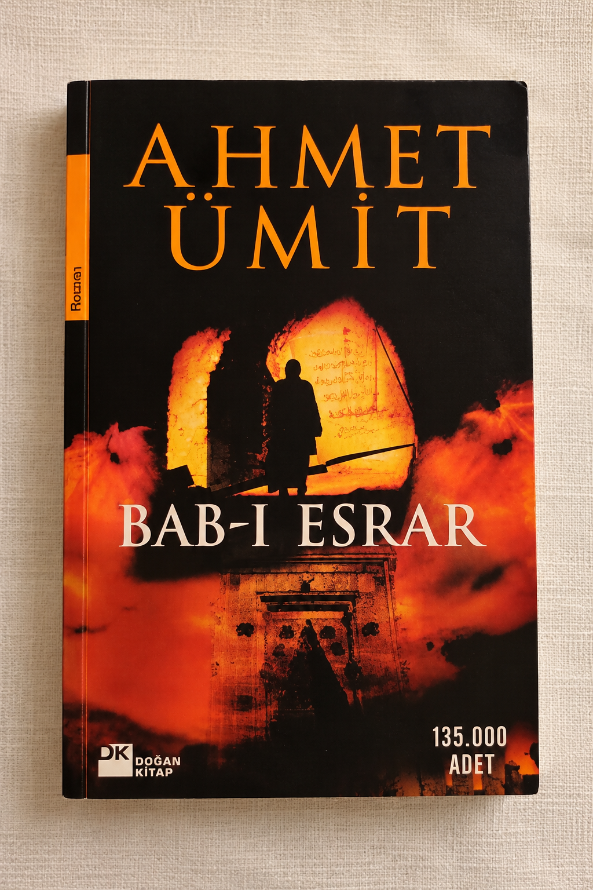

Four years
ago.
It started with a lesson.
One hour.
A teacher.
A student.
At least, that's how it started.
After a few lessons, something changed.
I started seeing you as more than a teacher.
Not because you stopped being one.
But because I was beginning to know the person behind the role.
And then, somehow, one-hour lessons became three- or four-hour conversations.
A question would lead to another question.
One topic would lead to another.
And before we knew it, the lesson was no longer really a lesson.
Then, somewhere along the way, “siz” became “sən.”
Nothing dramatic happened.
It was just a small change in the way we spoke.
But somehow, it made the distance between us feel a little smaller.
And the conversations could go anywhere.
Sometimes something serious.
Sometimes something completely pointless.
It didn't really matter what we were talking about.
You called me “PhD Sanan.”
I suppose you had your reasons. 😂
And somehow,
I never really minded.
And somewhere along the way, I got to know a side of you I hadn't seen at first.
Not just the teacher.
The person who could talk for hours.
Who could tease me just to see how I'd react.
Who could share a thought, a book, a film, or something completely random.
The person I slowly came to know.
And then there was “Miss Slander.”
I asked you how to say “şər” in English.
You said, “slander.”
And for some reason,
Miss Slander was born.
It stuck. 😂
Somewhere along the way, books became part of our conversations.

You gave me Bab-ı Esrar.
“Read it. Then tell me what you think.”And I did.
I gave you The Power of Now in return.
You never read it. 😂
I suppose I can't win every recommendation.
Maybe the books were never just about the books.
They were another way of sharing a little part of our worlds.
Then there were films.
You would ask me what to watch.
Sometimes, you would simply say:
“You choose. I'll watch.”And sometimes you'd complain:
“It's been so long since you recommended me a film.”Apparently, I had created expectations.
And sometimes, choosing the film itself took longer than watching it.
Like that time we watched Jaws.
You didn't exactly love my choice. 😂
But somehow, even choosing what to watch became part of the memory.
Sometimes the lesson ended.
A message after class.
Another conversation.
Another few hours.
Somehow, talking to you never really felt like part of the lesson.
The conversations continued.
The films continued.
You would still ask me what to watch.
I would still have something to recommend.
And I would still tell you: “You complain too much.” 😂
Sometimes you'd simply say:
“I'm in complaint mode again.”
And there were probably many things we could have analysed.
And somehow, that was enough.
By 2025, talking to you had simply become part of everyday life.
There were films.
Posts.
Random thoughts.
Some days we talked about something important. Some days about absolutely nothing.
And somehow, we just kept talking.
Almost every day.
Sometimes late at night.
A message.
A thought.
A post I thought you'd like.
Then one from you.
Little pieces of our days, sent back and forth.
I think we slowly became part of each other's everyday worlds.
Sometimes there wasn't even anything important to say.
We just wanted to share it with each other.
And somewhere in all those conversations, something changed for me.
I don't remember one particular moment.
There wasn't a single conversation that caused it. It was just a feeling that slowly grew, somewhere between all the ordinary moments.
And I think you changed something in me.
Not in one dramatic way.
You didn't suddenly make me a different person.
You simply made me realize that there were parts of myself I hadn't really understood before.
You showed me that there could be someone in this world
I could
truly love.
Four years can change a lot.
People change.
Circumstances change.
Life moves forward.
But when I look back, one thing still feels remarkably simple:
Some people become part of your life.
Some become part of what your life means.
And you became both.
A part of my life.
And, somehow,
a part of what it means to me.
And I hope you know how deeply you are valued.
Thank you for being
part of my story.
Four years.